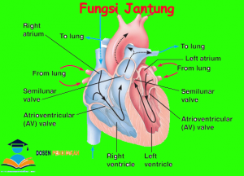
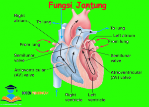

Privacy policy
2021.06.08 01:06
Kebijakan Privasi ini menjelaskan bagaimana informasi pribadi Anda dikumpulkan, digunakan, dan dibagikan ketika Anda mengunjungi atau melakukan pembelian dari Situs.
Informasi pribadi yang kami kumpulkan
Saat Anda mengunjungi Situs, kami secara otomatis mengumpulkan informasi tertentu tentang perangkat Anda, termasuk informasi tentang browser web Anda, alamat IP, zona waktu, dan beberapa cookie yang diinstal pada perangkat Anda. Selain itu, saat Anda menjelajahi Situs, kami mengumpulkan informasi tentang halaman web individu atau produk yang Anda lihat, situs web atau istilah pencarian apa yang mengarahkan Anda ke Situs, dan informasi tentang bagaimana Anda berinteraksi dengan Situs. Kami menyebut informasi yang dikumpulkan secara otomatis ini sebagai "Informasi Perangkat".
Kami mengumpulkan Informasi Perangkat menggunakan teknologi berikut:
"File log" melacak tindakan yang terjadi di Situs, dan mengumpulkan data termasuk alamat IP Anda, jenis browser, penyedia layanan Internet, halaman rujukan / keluar, dan stempel tanggal / waktu.
"Web beacon", "tag", dan "piksel" adalah file elektronik yang digunakan untuk mencatat informasi tentang cara Anda menjelajahi Situs.
Selain itu, saat Anda melakukan pembelian atau mencoba melakukan pembelian melalui Situs, kami mengumpulkan informasi tertentu dari Anda, termasuk nama, alamat penagihan, alamat pengiriman, informasi pembayaran (termasuk nomor kartu kredit), alamat email, dan telepon. jumlah. Kami menyebut informasi ini sebagai "Informasi Pemesanan".
Saat kita berbicara tentang "Informasi Pribadi" dalam Kebijakan Privasi ini, kita berbicara tentang Informasi Perangkat dan Informasi Pemesanan.
Bagaimana kami menggunakan informasi pribadi Anda?
Kami menggunakan Informasi Pesanan yang kami kumpulkan secara umum untuk memenuhi pesanan apa pun yang ditempatkan melalui Situs (termasuk memproses informasi pembayaran Anda, mengatur pengiriman, dan memberi Anda faktur dan / atau konfirmasi pesanan).
Kami menggunakan Informasi Perangkat yang kami kumpulkan untuk membantu kami menyaring potensi risiko dan penipuan (khususnya, alamat IP Anda), dan secara lebih umum untuk meningkatkan dan mengoptimalkan Situs kami.
Berbagi Informasi Pribadi Anda
Kami membagikan Informasi Pribadi Anda dengan pihak ketiga untuk membantu kami menggunakan Informasi Pribadi Anda, seperti yang dijelaskan di atas. Kami juga menggunakan Google Analytics untuk membantu kami memahami bagaimana pelanggan kami menggunakan Situs - Anda dapat membaca lebih lanjut tentang bagaimana Google menggunakan Informasi Pribadi Anda di sini: https://www.google.com/intl/id/policies/privacy/. Anda juga dapat memilih keluar dari Google Analytics di sini: https://tools.google.com/dlpage/gaoptout.
Terakhir, kami juga dapat membagikan Informasi Pribadi Anda untuk mematuhi hukum dan peraturan yang berlaku, untuk menanggapi panggilan pengadilan, surat perintah penggeledahan, atau permintaan sah lainnya untuk informasi yang kami terima, atau untuk melindungi hak kami.
Periklanan perilaku
Sebagaimana dijelaskan di atas, kami menggunakan Informasi Pribadi Anda untuk memberi Anda iklan bertarget atau komunikasi pemasaran yang kami yakini mungkin menarik bagi Anda. Untuk informasi lebih lanjut tentang cara kerja iklan bertarget, Anda dapat mengunjungi halaman pendidikan Network Advertising Initiative ("NAI") di http://www.networkadvertising.org/understanding-online-advertising/how-does-it-work.
Anda dapat menyisih dari periklanan bertarget dengan menggunakan tautan di bawah ini:
Facebook: https://www.facebook.com/settings/?tab=ads
Google: https://www.google.com/settings/ads/anonymous
Bing: https://advertise.bingads.microsoft.com/en-us/resources/policies/personalized-ads
Selain itu, Anda dapat menyisih dari beberapa layanan ini dengan mengunjungi portal penyisihan Digital Advertising Alliance di: http://optout.aboutads.info/.
Jangan lacak
Harap perhatikan bahwa kami tidak mengubah pengumpulan data dan praktik penggunaan Situs kami saat kami melihat sinyal Jangan Lacak dari browser Anda.
Hak Anda
Jika Anda adalah penduduk Eropa, Anda memiliki hak untuk mengakses informasi pribadi yang kami miliki tentang Anda dan meminta agar informasi pribadi Anda diperbaiki, diperbarui, atau dihapus. Jika Anda ingin menggunakan hak ini, silakan hubungi kami melalui informasi kontak di bawah ini.
Selain itu, jika Anda adalah penduduk Eropa, kami mencatat bahwa kami memproses informasi Anda untuk memenuhi kontrak yang mungkin kami miliki dengan Anda (misalnya jika Anda melakukan pemesanan melalui Situs), atau untuk mengejar kepentingan bisnis kami yang sah tercantum di atas. Selain itu, harap diperhatikan bahwa informasi Anda akan ditransfer ke luar Eropa, termasuk ke Kanada dan Amerika Serikat.
Retensi data
Saat Anda melakukan pemesanan melalui Situs, kami akan menyimpan Informasi Pesanan Anda untuk catatan kami kecuali dan sampai Anda meminta kami untuk menghapus informasi ini.
Perubahan
Kami dapat memperbarui kebijakan privasi ini dari waktu ke waktu untuk mencerminkan, misalnya, perubahan pada praktik kami atau untuk alasan operasional, hukum, atau peraturan lainnya.
- Penyakit Penyakit Jantung - Gejala, Penyebab, Pengobatan .
- Jantung - Gejala, Penyakit, dan Cara Mengobati | Halodoc.com
- Jangan Abaikan Gejala-Gejala Jantung Bengkak Berikut Ini .
- 11 Gejala Penyakit Jantung yang Bisa Terlihat di Kulit dan .
- Jantung - Wikipedia bahasa Indonesia, ensiklopedia bebas
- Penyakit Jantung - Pengertian, Gejala, Penyebab, Faktor .
- Mengatasi Sakit Jantung dan Serangan Jantung – Pemerintah .
- Waspada dan Kenali Lebih Jauh Ciri-Ciri Sakit Jantung .
- Patut waspada, inilah 4 ciri-ciri penyakit jantung - Kesehatan
- Tempat-Tempat Nyeri Pada Gangguan Jantung - Direktorat .
- Penyakit Penyakit Jantung - Gejala, Penyebab, Pengobatan .
adalah organ terpenting dalam tubuh manusia dan mempunyai ukuran sebesar kapalan tangan. berfungsi memompa dan menyebarkan darah . - Jantung - Gejala, Penyakit, dan Cara Mengobati | Halodoc.com
Di Indonesia sendiri, penyakit kardiovaskuler, stroke dan penyakit koroner adalah penyebab utama kematian yang menyebabkan lebih dari 470.000 . - Jangan Abaikan Gejala-Gejala Jantung Bengkak Berikut Ini .
(bahasa Latin: cor) adalah sebuah rongga, rongga organ berotot yang memompa darah lewat pembuluh darah oleh kontraksi berirama yang berulang. - 11 Gejala Penyakit Jantung yang Bisa Terlihat di Kulit dan .
7 hari yang lalu — - Jantung - Wikipedia bahasa Indonesia, ensiklopedia bebas
Tingginya angka kematian akibat penyakit , khususnya serangan , selayaknya menjadi perhatian masyarakat dan petugas kesehatan sehingga . - Penyakit Jantung - Pengertian, Gejala, Penyebab, Faktor .
Gejala paling umum dari penyakit coroner adalah angina atau angina pectoris yang juga dikenal sebagai nyeri dada. Angina dapat digambarkan . - Mengatasi Sakit Jantung dan Serangan Jantung – Pemerintah .
Gagal , merupakan suatu kegagalan otot untuk memompakan darah secara memadai ke seluruh tubuh. Aritmia, merupakan suatu gangguan . - Waspada dan Kenali Lebih Jauh Ciri-Ciri Sakit Jantung .
3 hari yang lalu — - Patut waspada, inilah 4 ciri-ciri penyakit jantung - Kesehatan
16 Okt 2020 — - Tempat-Tempat Nyeri Pada Gangguan Jantung - Direktorat .
7 Mei 2021 —
adalah organ terpenting dalam tubuh manusia dan mempunyai ukuran sebesar kapalan tangan. berfungsi memompa dan menyebarkan darah .
Di Indonesia sendiri, penyakit kardiovaskuler, stroke dan penyakit koroner adalah penyebab utama kematian yang menyebabkan lebih dari 470.000 .
(bahasa Latin: cor) adalah sebuah rongga, rongga organ berotot yang memompa darah lewat pembuluh darah oleh kontraksi berirama yang berulang.
7 hari yang lalu —
Tingginya angka kematian akibat penyakit , khususnya serangan , selayaknya menjadi perhatian masyarakat dan petugas kesehatan sehingga .
Gejala paling umum dari penyakit coroner adalah angina atau angina pectoris yang juga dikenal sebagai nyeri dada. Angina dapat digambarkan .
Gagal , merupakan suatu kegagalan otot untuk memompakan darah secara memadai ke seluruh tubuh. Aritmia, merupakan suatu gangguan .
3 hari yang lalu —
16 Okt 2020 —
7 Mei 2021 —
 
